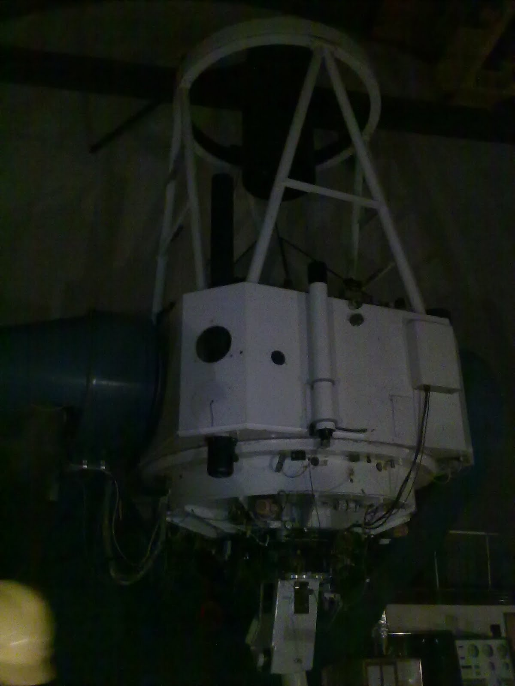
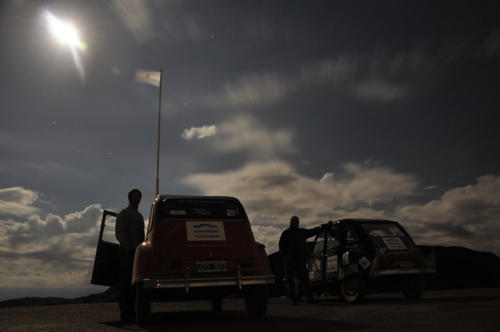
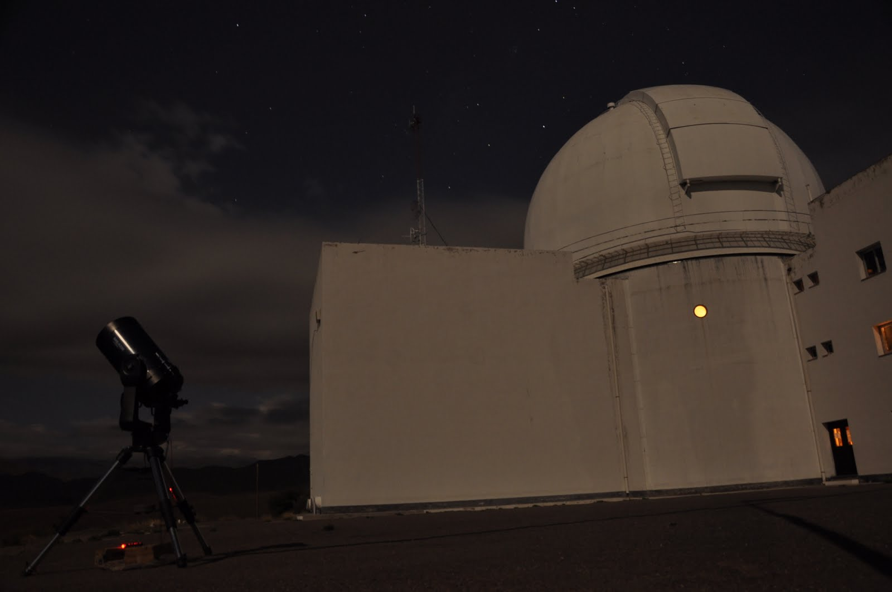
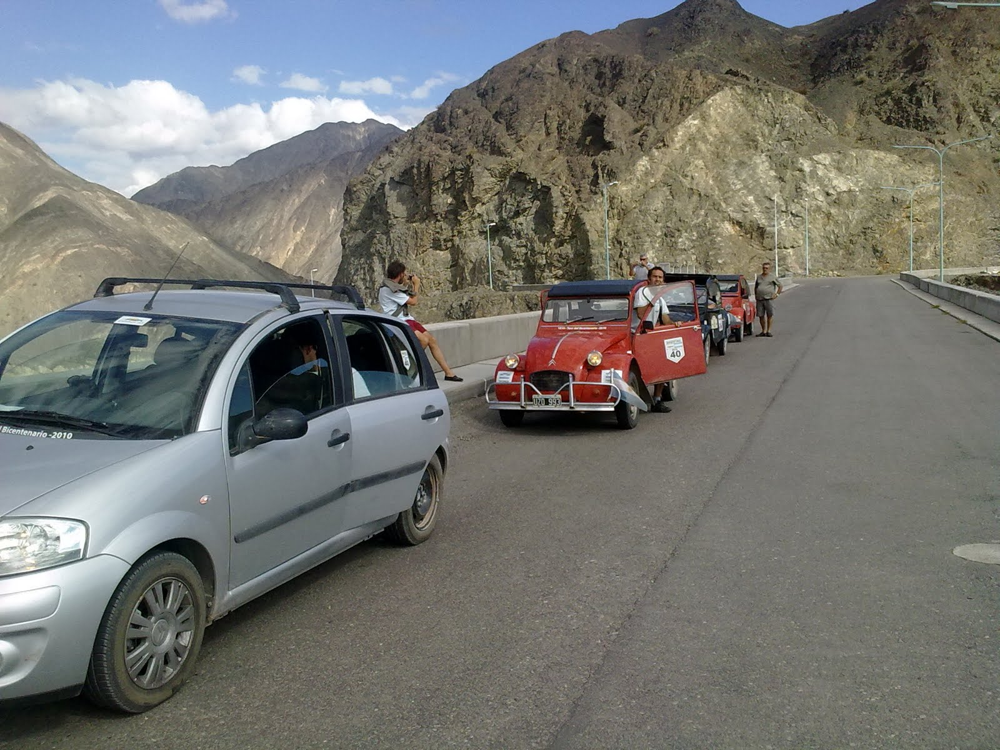
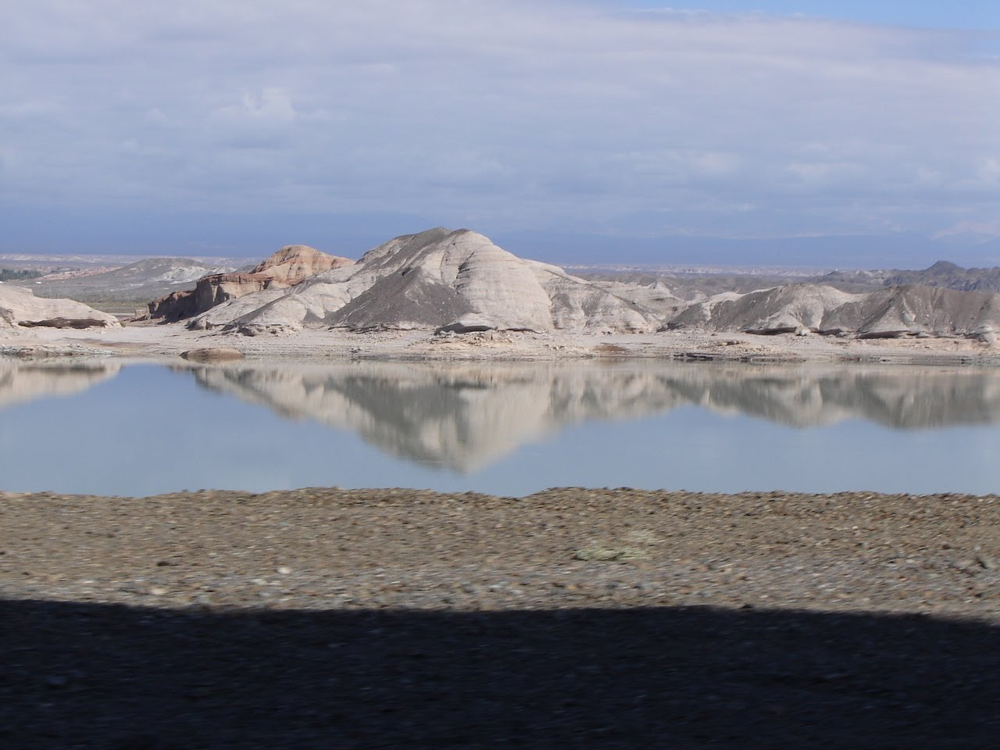

La mañana del Rodeo fue muy tranquila y diversa en actividades para todo el equipo. Los mas chicos se acoplaron a un grupo de europeos de intercambio, y se fueron a realizar una caminata por los cerros de la Cuesta del Viento. El vasco y yo nos encargamos de la logística para el asado. Pilin de la mecánica y revisión de las Citronaves. Jose atendió las cuestiones con la Dirección de Turismo. Fernando y mis hermanos, emprendieron una larga caminata por la principal y Pedro y Noelia cuidaron el fuerte!!
Próximo al mediodía, el vasco comenzó con el asado a leña. Los aromas que surgían de la parrilla fue el llamador necesario para aglutinar a todo el equipo. Uno a uno los citronautas se fueron acercando a la parrilla. El asado? ...... Espectacular y muy sabroso como siempre. También dimos vueltas por la Cuesta del viento, para hacer la digestión.
Le dimos la despedida a Pilin y emprendimos el camino hacia el Barreal. El "Charly 3" (C3) arrimó a Pablo Rizzotti a San Juan y dio alcance a las Citronaves. El Camino fue de montaña y de cuestas pronunciadas. Los 3Cv hacían rugir sus motores en el esfuerzo, llegando lentamente a la cima de cada una de las "lenguas". El camino nos encontró ya en la noche, lo cual le sumaba adrenalina extra.
En la llegada al Barreal nos alojamos en un Hostel cerca de las once de la noche. De ahí partimos hacia el Parque Nacional el Leoncito, ya que nos aguardaba Claudia y Antonio. Muy gentilmente nos mostraron las instalaciones, el Telescopio y nos explicaron como trabaja este centro dependiente del CONICET. Para el final nos aguardaba una clase de astronomía y avistamiento de la luna y las estrellas con un aparato que estaba emplazado por fuera del edificio. Ver la luna tan de cerca y con tanto detalle fue algo sorprendente.
Ya pasadas las 3 de la mañana y después de una sesión de fotos nocturna, a cargo de Paula, dimos por terminado el día y nos fuimos a dormir.
Que interesante todo lo que cuentan¡¡¡¡
debe haber sido impactante el cielo desde el observatorio¡, ya lo es a simpole vista en esas soledades¡
un beso a todos
Y unos especialers a Joti y a Agus
Patin (la esposa yde Joti y mamá de Agus)